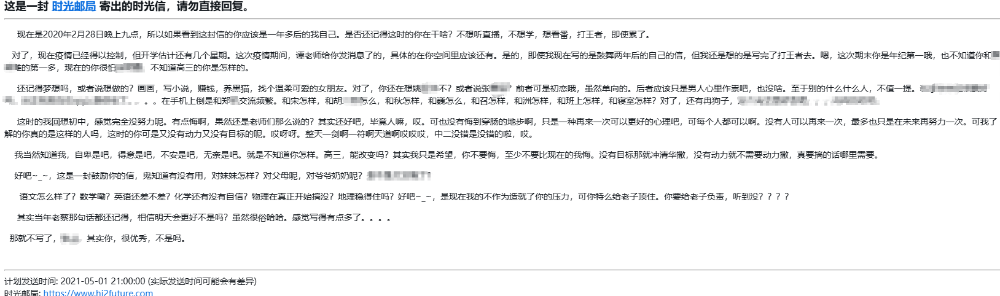

记得，当时有一位看学校门的老头爷爷这么说：你们毕业以后呢，有现在三分之一的勤奋的程度，那就足够了。当时不以为然，现在看来，现在都不及往日的十分之一。
是啊，梦想在退步。
在QQ邮箱翻到一封过去的自己写给曾经的自己的信。
写信日期是2020年2月28日，收信日期是2021年5月1日，此时是2026年6月5日。

可以看出，这是20年的我想对21年的我进行一些激励，却也不记得21年我感受如何。
可以想象，一个天真的少年，大概是晚上，抱着手机坐在圆桌前，冥思苦想，试图宽慰彼时的自己，试图激励未来的自己，阐述着一个简单描述的梦想。
物是人非，也包括自己。
看到一篇文章，说：
“梦想在退步。”